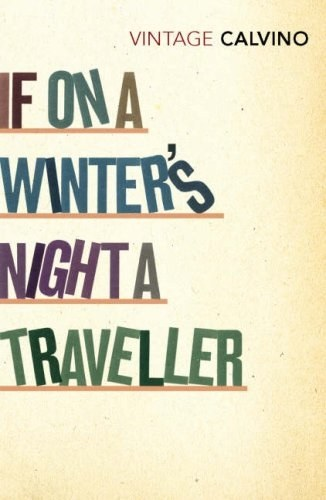
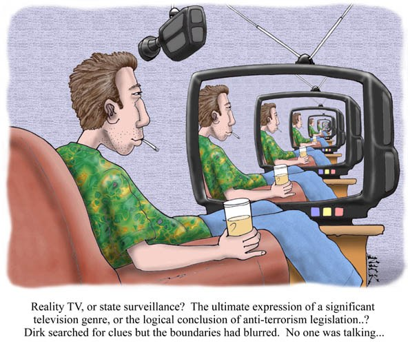

Week 7 The Abyss and the Fourth Wall

Why do novels in novels or novels about novels or films in films or films about films or video games in video games mean so much? What do they tell us about the work? What do they tell us about us?
Mise en Abyme and Navel Gazing
Tuesday, February 22, 2011
Week 7 The Abyss and the Fourth Wall
Italo Calvino’s If on a winter’s night a traveller
Film JCVD
For Further Reading
WATCH Death Note
READ
Lewis Caroll’s “What the Tortoise Said to Achilles”
Borges, “The Secret Miracle” and “Death and the Compass” from Labyrinths
Lucien Dällenbach, “Reflexivity and reading” New Literary History (1980)
